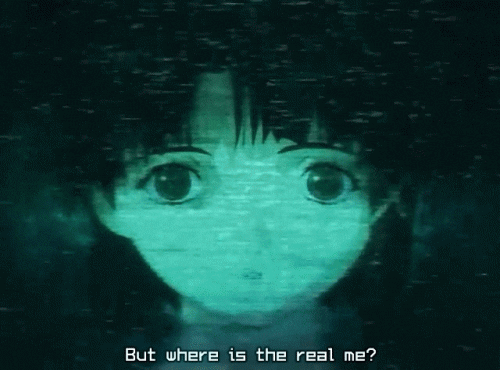

III – Psyche
Summary
Lain receives a mysterious psyche processor in her locker. It’s an add-on for her Navi, designed to enhance her As she installs it, her connection to the Wired deepens...
Key Theme
Evolution through Technology
The psyche chip represents a gateway. Lain upgrades herself—not just her computer
Moment
" I’m connected "
